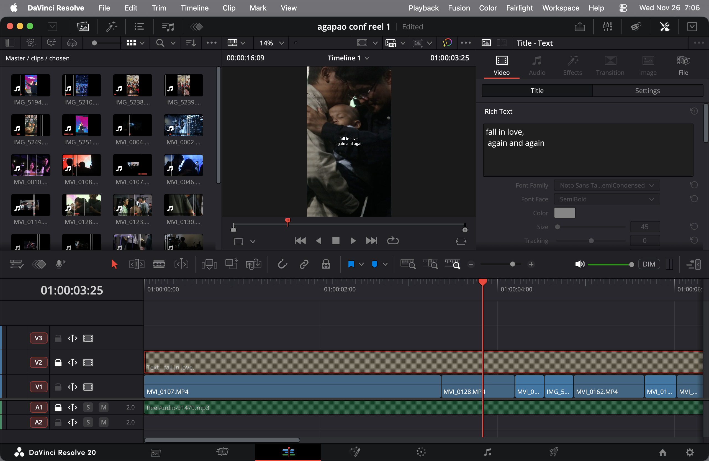

About Me
Hi, I'm Hevin Randika, a dedicated videographer and photographer passionate about capturing life's most meaningful moments. With years of experience in visual storytelling, I specialize in transforming ideas into compelling narratives that resonate with audiences. From promotional videos to documentaries, I believe in the power of film to connect people and share authentic stories.
My journey into videography and photography began with a love for creativity and technology. I've worked on diverse projects, from corporate promotions to personal documentaries, always striving to blend artistic vision with technical excellence. When not behind the camera, you'll find me exploring new editing techniques and staying current with industry trends.